Using mIRC to Access the Desert Bus Chat
mIRC is a Windows client that is simple to use. You can download it here. The latest version at the moment of writing this is 7.32, but older versions will work as well.
Setting Up mIRC For The First Time
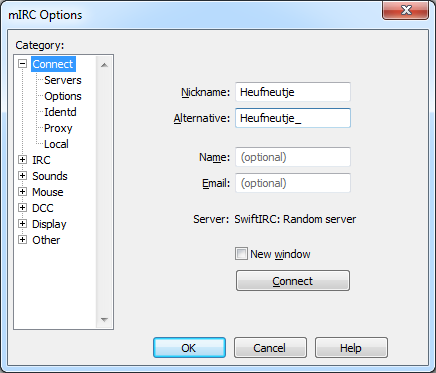After installing mIRC and running it for the first time, the options screen will pop up. Here a number of things can be put in.
Nickname: This is the name you will be using in the chat.
Alternative: This is the nickname that will be used if your first nickname is already taken.
Name and Email: These are not important to us since they are optional and as such can be left empty.
Setting Up The Desert Bus Network
On the Options screen that you see above you can click on Servers under Connect. This will take you to the screen you see below.
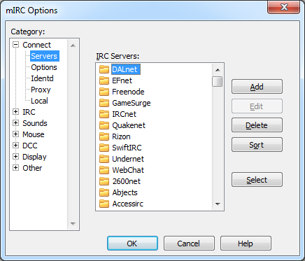On this screen you can see that a large number of servers is already present and we will add the Desert Bus server to this list. To do this you click Add. This will take you to the following screen:
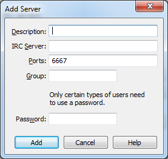On this screen the following things are important:
Description: This is the name the server will get in the server list. We'll set it to "DesertBus", though it doesn't really matter what you call it. It will work all the same.
IRC Server: This is the IP for the server. Set it to "irc.desertbus.org".
Ports: This is the port mIRC will connect to. You can leave it at the default "6667". If you want extra security, you can use port "+6697", but you will need to have OpenSSL installed. If you want to know more about this, refer to "How to connect using SSL".
Password: If you have a Desert Bus Donor Account (and if you don't, get one) you can easily log in automatically every time you connect to the server. The password you put here will be: "Donoremail Password". For example, mine could be "heufneutje@dontspam.com testpass123".
After adding all this your window should look like this:
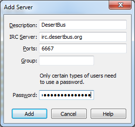Now you can click Add and your server should show up in the list.
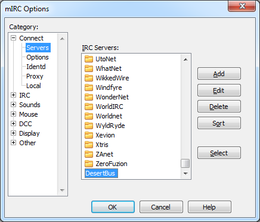You are now done setting up the server! All you need to do now is click Select.
Automatically Connecting To Desert Bus On Startup (Optional)
To save yourself a few seconds you can configure mIRC to automatically connect to Desert Bus every time it starts up. To do this, you click Options under the Connect group on the options screen as seen below.
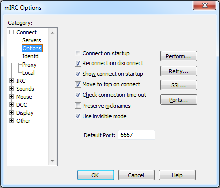Here you can check Connect on startup to make mIRC connect to the server every time you start it. Here you can also uncheck Show connect on startup so that the options screen does not pop up every time you start mIRC.
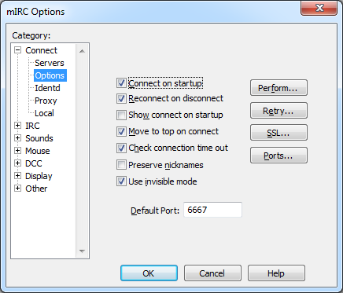Finally Connecting To The Desert Bus Network
You're almost done! On options screen press OK and click the button with the lightning bolt on it to connect.
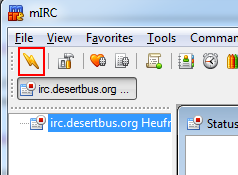You are now connected to the server. Now mIRC will show you the mIRC Favorites window and ask you to join a channel. This is not necessary, because the server will make you join the #desertbus channel automatically. To prevent this window from popping up in the future, you can uncheck Popup favorites on connect and hit OK.
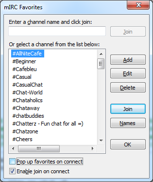And that's it! Welcome to the chat!
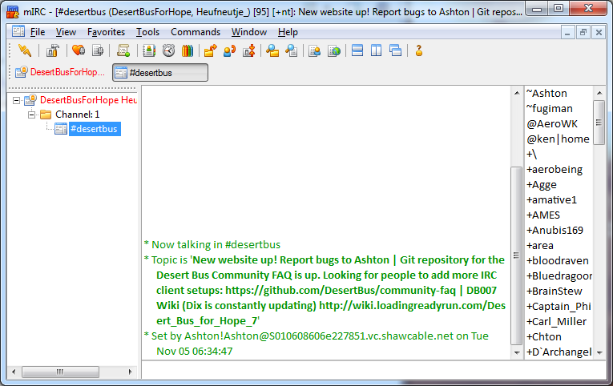Hiding Joins And Parts In #desertbus
With so many people in the chat there are bound to be quite a few joining and leaving constantly. To remove the clutter of these messages, right click the #desertbus tab at the top or on the left side of your screen. Now click Events....

This will bring up the window below. Here you can change which events you want to see and which events you want to be hidden.
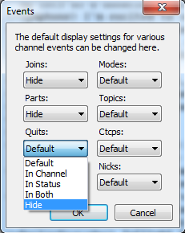How to connect using SSL
To be able to connect to the server securely, you will need OpenSSL. It can be downloaded here. After you install it, you go back to the options screen. (Tools > Options...). Click on Options under Connect. If you installed OpenSSL correctly, the SSL... button should be available to click.
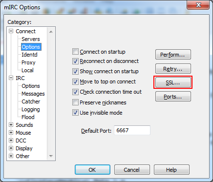This will pop up the SSL window. Here, under Certificates, you select Automatically accept invalid certificates and you hit OK.
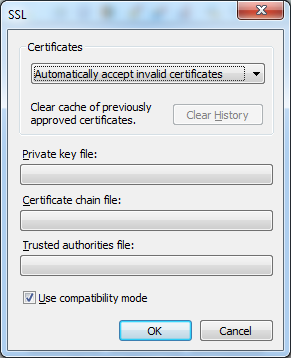The last thing you need to do is go back to Servers, select the DesertBus server and click Edit. All you need to do here is change the port to "+6697".
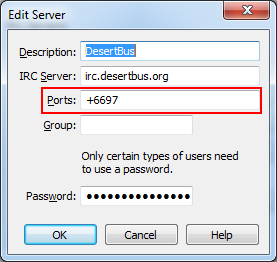And that's it! You can connect to the server now.